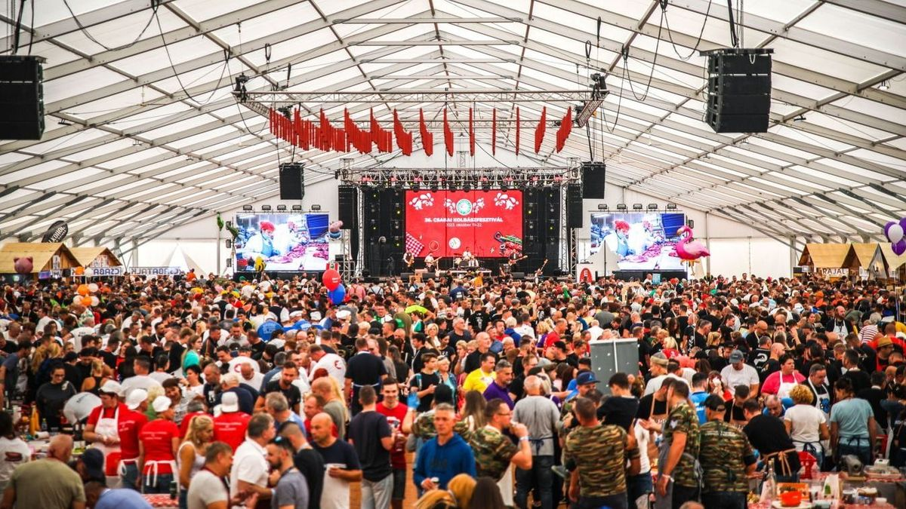
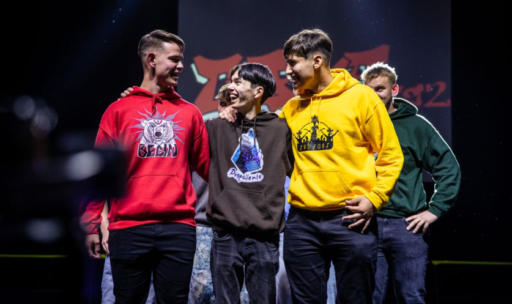
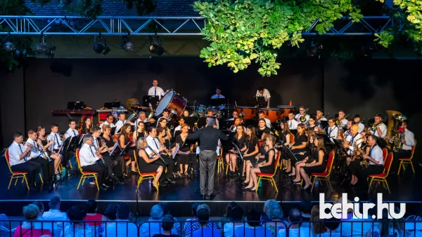
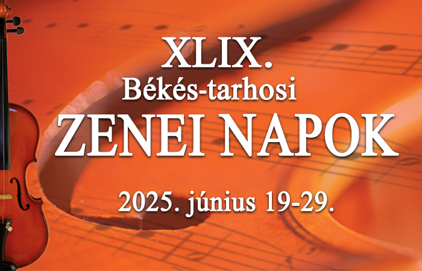
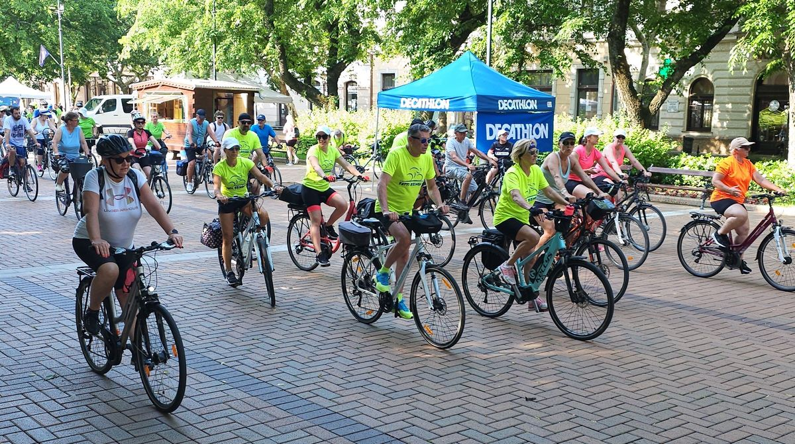
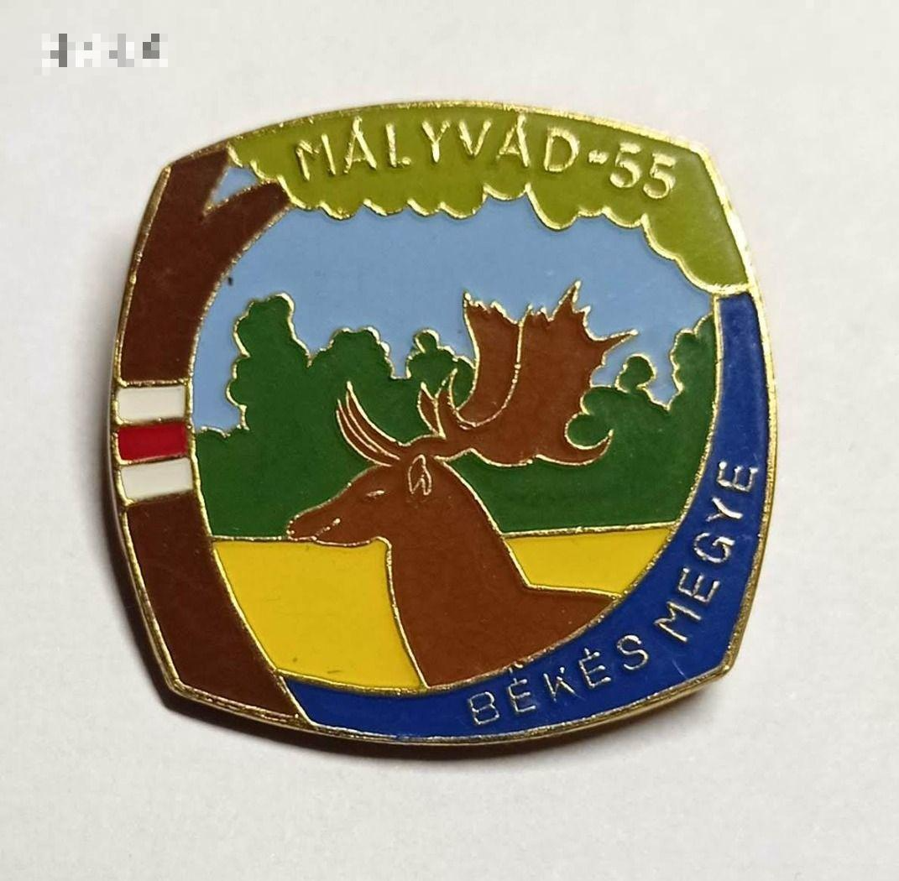
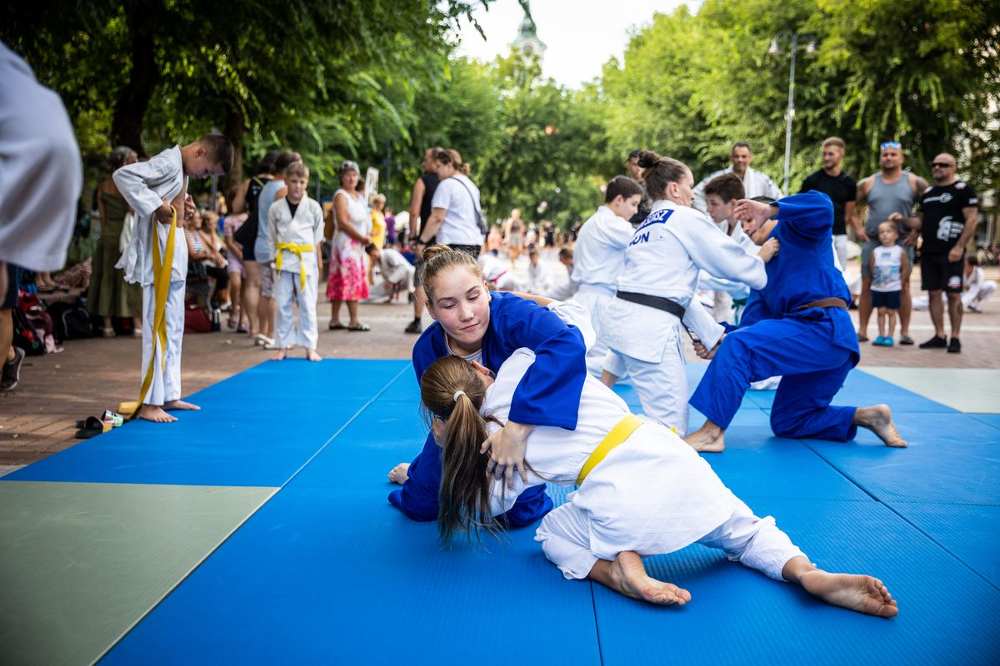

Programok a városban és környékén
Békéscsaba a nyugdíjasok városa. Vagy mégsem?
Hogy mit is lehet csinálni
Békéscsabán?
Legyen szó sportról, kulturális
élményekről, gyermekprogramokról,
kirándulásról vagy épp
kézműveskedésről, biztosan tudok egy jó helyet
ajánlani Békéscsabán és
környékén; számos program a hét minden
napján elérhető.
A kolbászfesztivál
A Csabai Kolbászfesztivál
Békéscsaba egyik legismertebb eseménye, amelyet minden
év októberében rendeznek meg. A fesztivál
középpontjában a híresocsabai
házikolbász áll, de emellett népzenei,
gasztronómiai és kulturális programok is várják a
látogatókat. Az esemény leglátványosabb
része a több száz csapatot felvonultató
kolbásztöltő verseny, ahol családok,
baráti társaságok és profi mesterek is
megmérettetik magukat. A rendezvény évente több
mint 100 000 látogatót vonz Magyarországról
és külföldről is.


Békéscsaba
Garabonciás napok
Magyarország legnagyobb középiskolás
rendezvénye.

Békéscsaba
Csabai nyár
Nyári szabadtéri programsorozat.

Békéscsaba
BéTAZEN
Békés-Tarhosi Zenei Napok, könnyű,
és komolyzenei koncertek.

Békéscsaba
Három Város kerékpártúra
Az egyik legnagyobb kerekpáros rendezvény a
városban és környékén.

Békéscsaba
Mályvádi kerékpártúrák
Nem csak kerékpárral teljesítheoőek, a
mályvádi erdőben vezető
teljesítméoytúrák.

Békéscsaba
Sporthét
Minden évben Augusztus végén, a
különböző sportokat űzők bemutatják mivel
foglalkoznak.